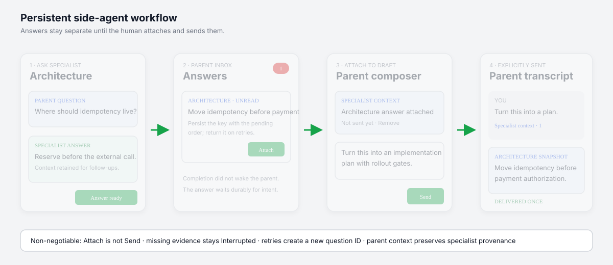

Interaction and persistence RFC
Keep specialists close without pretending they are the parent.
A named side agent can hold a long-running conversation. Its answers wait in a durable inbox until a human deliberately attaches context and sends the parent message.
Proposed
Core decision
OpenCode owns child sessions and transcripts. The BFF owns FIFO correlation, answer receipts, and explicit delivery. Ambiguity never triggers replay.
Four boundaries carry the design
Try the parent-specialist workflow
Open Architecture, attach its answer, then send the parent draft. Use the failure control to verify that rejected parent submission preserves both draft and attachment.
Checkout reliabilityParent session · idle

Current evidence versus target ownership
Current
Parent task part
└─ child session
├─ process-local status
├─ child transcript
└─ heuristic hand-back
BFF derives one child row
No question/result registryTarget
Parent + named specialist
└─ durable FIFO questions
└─ persistent child transcript
└─ correlated answer
└─ parent inbox
└─ explicit attach/send| State | Owner | Recovery rule |
|---|---|---|
| Child sessions/messages | OpenCode | Transcript reads |
| Specialist/question/delivery records | BFF JSON V1 | Validate then reconcile |
| Active process status | OpenCode process memory | Positive evidence only |
| Composer text | Browser | Preserve on send failure |
| Accepted answer attachment | BFF | Revision checked across devices |
Parent-scoped resources, not a message bus
Specialist
(directory, parentID, sideAgentID)
Named server-mapped agent with one verified child session and one FIFO.
Question
sq_id + sequence + marker
One correlated child user/assistant turn or an honest terminal interruption.
Delivery
inbox → accepted → delivering → delivered
Reserved only by the next explicit human parent prompt.
| POST /api/sessions/:parent/side-agents | Create named specialist and verified linked child |
| POST .../:specialist/questions | Persist and queue a sequential question |
| POST .../:question/accept | Attach answer to parent composer context |
| POST .../:question/cancel | Persist cancellation before verified abort |
Design for the gaps between durable systems
Select a scenario. Each outcome states what the UI may say, what action remains safe, and which tempting conclusion is prohibited.
Probe first, then earn autonomy
0 · ContractLive probes, OpenAPI, state/security review
1 · CoreJSON store, reducer, marker correlation
2 · BridgeScheduler, reconciler, cancellation
3 · ExperienceDesktop/mobile conversation and inbox
4 · SoakFlagged rollout, alerts, rollback drill
Release gates
- Repeated-child live probe and permission evidence
- Every crash boundary in failure catalogue
- No automatic duplicate marker submission
- Cross-parent and cross-directory rejection
- Desktop/mobile keyboard and focus coverage
Kill switches
- Disable specialist creation
- Disable question dispatch
- Disable answer attachment
- Disable notifications independently
- Never hide already delivered snapshots